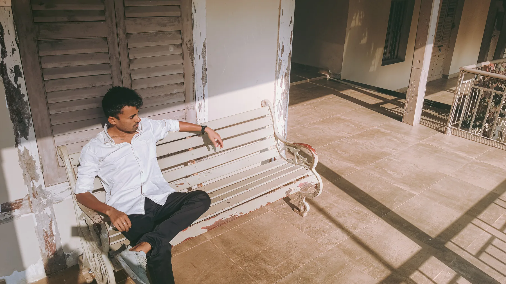

Web & programming
- HTML — Static Website Development
- CSS — Styling & Layouts
- JavaScript — Interactivity
- Python — Fundamentals
- GitHub — Static Deployment

Designing visuals, crafting stories, building digital experiences.
Creative technologist & visual designer
Designing visuals, crafting stories, and building creative digital experiences — at the intersection of design, photography, and emerging technology.
01 / Introduction
Work that moves between design, photography, writing, and emerging tools.
Computer Instructor and English Honours student with a deep interest in creative technology, visual storytelling, and digital experimentation.
My work lives at the intersection of design, photography, writing, and emerging AI tools — always exploring new ways to transform ideas into visual and digital experiences.
I've built hands-on experience in graphic design, poster and magazine-style layouts, photography, and photo editing — using Canva, Adobe Photoshop, and Adobe Lightroom. I also experiment with AI-powered creative tools including image generation and generative fill.
Alongside visual work, I explore the technical side — HTML, CSS, JavaScript, and Python, building websites, Telegram bots, and Android widgets with AI assistance. I also tinker with Arduino and Raspberry Pi for DIY electronics projects. As a Computer Instructor, I've trained 60+ students in basic computing and MS Office.
Beyond all of it, I write poetry and short stories — exploring themes of life and human emotion. Storytelling in every form it takes.
02 / Capabilities
A practical mix of technical foundations and visual craft.
03 / Built things
AI-assisted builds — from web to bots to Android.
A small set of experiments and working pieces. Where a public destination is not currently available, the card says so instead of sending you to a dead link.
A fully custom dark-themed portfolio website built with HTML, CSS, and JavaScript — no frameworks, no templates. Designed and developed from scratch with AI assistance, featuring responsive layouts and a distinct editorial aesthetic.
A functional Telegram bot built with AI assistance. Automates tasks, handles user interactions, and runs commands — deployed and actively working.
A custom Android home screen widget built with AI assistance. Available as a standalone APK — install directly, no Play Store needed.
Second custom Android widget — different utility, same sideload-friendly APK delivery. Built with AI assistance to solve a specific home screen need.
04 / Visual work
Eight supplied frames, presented without broken placeholders or hidden hover-only captions.

Selected frame
A moment caught between shadow and neon — the city breathes differently after midnight. Streets become canvases, and every lamppost casts a story worth chasing.
More frames on @_random._.0ne_ ↗
05 / Professional journey
Hands-on experience across teaching, technical coordination, and media.
06 / Academic background
A record of the education already represented in the original portfolio.
Notre Dame School, Gumla
Notre Dame School, Gumla
Kartik Oraon College, Gumla
07 / Get in touch
For a creative collaboration, technical project, or conversation about design and storytelling.
Whether it's a creative collaboration, a technical project, or simply a conversation about design and storytelling — I'd love to hear from you.
Email Aditya